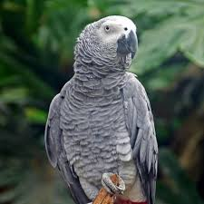
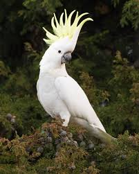

يُعرف طائر الكاسكو (Congo African Grey Parrot) بكونه أحد أذكى الكائنات الحية على وجه الأرض، حيث يمتلك قدرات ذهنية تُقارن بذكاء طفل في الخامسة من عمره. إليك أهم المعلومات عنه
ويشتهر باسم الببغاء الرمادي الأفريقي.
يُعتبر من الطيور المعمرة، حيث يعيش ما بين 40 إلى 60 عاماً في الأسر، وقد يصل في البرية إلى 23 عاماً

يوجد أكثر من 20 نوعاً من هذه الطيور، يتركز معظمها في أستراليا وإندونيسيا والفلبين